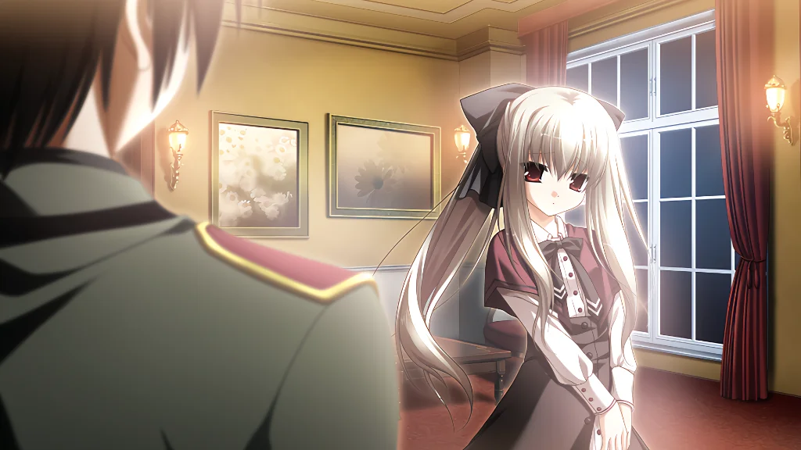
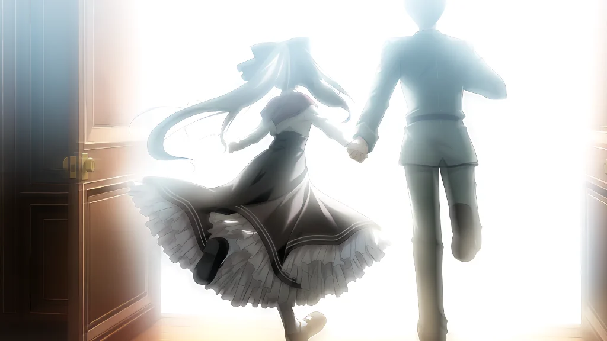

CHRONICLES OF EDEN
终焉与誓约的物语
01

Chapter I
玻璃牢笼里的救世主
在地球生命进入终结倒计时的时代，703研究所地下设施中，白衣少女在数据之海里静默计算着整个人类的未来。孤独与无休止的研究构成了她的一生，直到一名不苟言笑的守卫走入这片白色的牢笼。
02

Chapter II
破晓时分的私奔
当方舟升空、全人类陆续撤离这颗注定灭亡的母星时，亮选择放弃逃生的权利，持枪击碎了研究所的重重封锁，牵起了 诗音 那只单薄冰凉的手：“走吧，我带你去看真正的世界。”
03
Chapter III
山丘小屋与花之海
远离了纷争与喧嚣，两人来到了宁静无人的海边与山丘。生平第一次品尝红茶的甘醇、第一次在夕阳下感受蒲公英随风散落、第一次拥有属于两个人的平凡日常。这是全宇宙最宁静的世外桃源。
04
Chapter IV
直至繁星陨落的归途
作为加速消耗生命的 Felix，诗音 的寿命终于走到尽头。在被浩瀚星光笼罩的夜幕之下，没有遗憾，没有悲鸣，只有恋人温柔的怀抱与轻声的道别：“谢谢你……在这个星球上找到了我。”